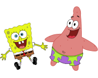
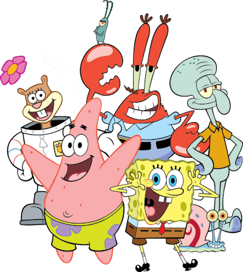

A história do restaurante
Antes de ser um restaurante, o Siri Cascudo era uma casa de repouso para idosos. O Sr. Siriguejo comprou o prédio e o transformou no estabelecimento de sucesso que conhecemos hoje.
Prepare-se para mergulhar em uma celebração cheia de cores, risadas e muitas aventuras submarinas! Esse é o convite oficial para a grande festa do nosso amiguinho Bob Esponja. Coloque sua roupa de bolha e venha se divertir com a gente! 🌊✨
Por favor, nos diga se você participará da balada do Bob Esponja.
Olha só quem já confirmou presença: Bob Esponja, Patrick Estrela, Lula Molusco (com aquela cara de poucos amigos 🐙), Sandy Bochechas, Senhor Sirigueijo, Gary Caracol e até o Plankton (provavelmente tentando roubar a fórmula do hambúrguer de siri 🫢). Uma galeria inteira dedicada aos personagens mais icônicos da Fenda do Biquíni!
Tá na hora, tá na hora! 🎉 Chegou a hora de descobrir o que a Balada do Bob te reserva! Prepare sua roupa de bolha e se junte a nós para uma noite inesquecível, com uma programação recheada de risadas, música e muita diversão submarina! 🤩
Você sabia que o Hambúrguer de Siri é a comida mais famosa de toda a Fenda do Biquíni? Nessa seção, você vai descobrir curiosidades deliciosas sobre o Siri Cascudo. Spoiler: a fórmula secreta continua sendo segredo! 😉
Antes de ser um restaurante, o Siri Cascudo era uma casa de repouso para idosos. O Sr. Siriguejo comprou o prédio e o transformou no estabelecimento de sucesso que conhecemos hoje.
O segredo do famoso Hambúrguer de Siri continua um mistério, mas muitos fãs especulam que ele não leva carne de caranguejo!
O Siri Cascudo tem um rival de peso: o Balde de Lixo do Plankton. O Sr. Siriguejo vive em disputa com Plankton para proteger a fórmula.
O restaurante só tem dois funcionários: Bob Esponja (cozinheiro) e Lula Molusco (caixa). Uma dupla e tanto!